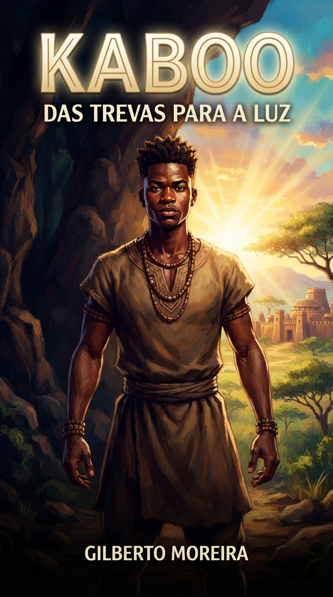

A incrível jornada verídica do príncipe africano que encontrou a liberdade suprema.
As origens na tribo Kru e a criação com honra e tradições ancestrais.
A captura pela tribo rival Grebos e os dias de intensa resistência como refém.
O momento sobrenatural em que as correntes caem e a luz liberta o jovem.
A fuga pela selva, a chegada a Monrovia e o primeiro contato com a Palavra.
A entrega total a Cristo, o batismo e o início do legado mundial.